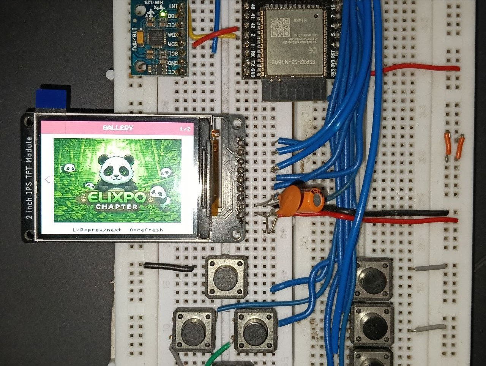
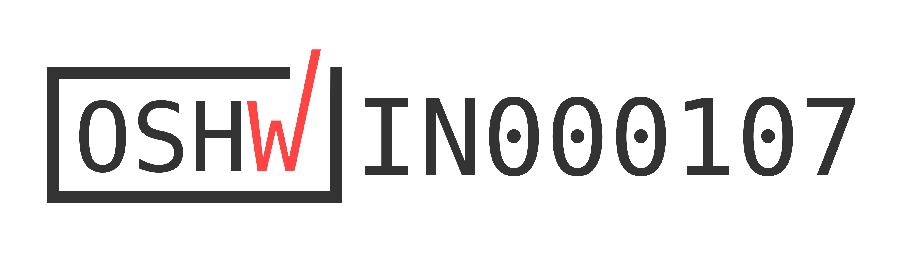

JIS University
JIS UniversityABP Infocom 2026 · Kolkata
Falera:An Open-Source Smart Badge
with Its Own Operating System
I designed the board and wrote its operating system.

The final board, in 3D
Hi, I'm Lumi. Come and try the badge!

The working prototypeOn the table: try it.
Its own operating system
FaleraOS, on MicroPython: apps, an App Store and over-the-air updates.

Certified open hardware design
Certified by OSHWA, UID IN000107 (CERN-OHL-P).
Smooth video on a microcontroller
RV565, a video format I invented, took playback from 0.5 to 24 FPS. Featured on the Adafruit blog; preprint on arXiv.
ESP32-S3→FaleraOS→Apps & App Store→RV565 video→SPI display


Ayushman Bhattacharya
Founder, Elixpo · JIS University
falera.elixpo.com
Elixpo
JIS University
logo here
logo here